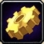

Engenharia é uma das profissões de criação mais interessantes em World of Warcraft - necessita de materiais produzidos com outra profissão, normalmente Mineração.
Engenheiros transformam vários reagentes (principalmente peças e metáis) em bugigangas úteis e divertidas, itens cosmeticos (como montarias e mascotes),
e alguns óculos/elmos épicos, armas de longo alcance e miras.